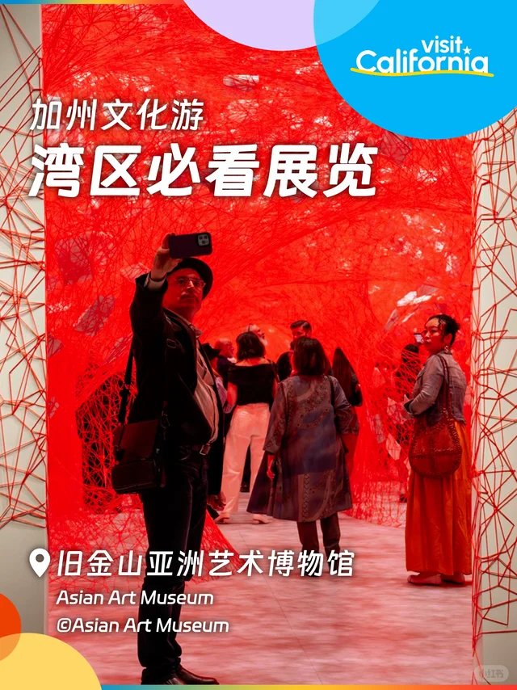
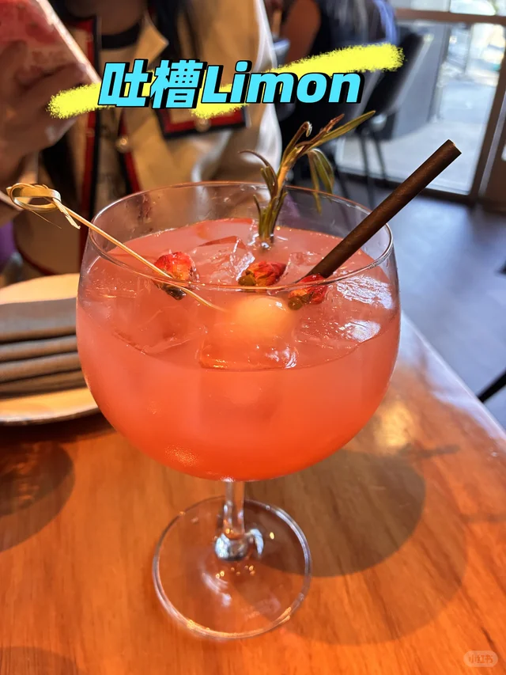
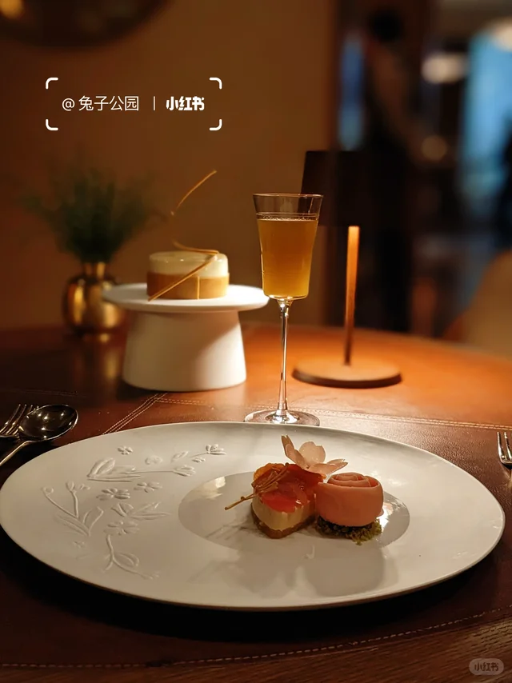
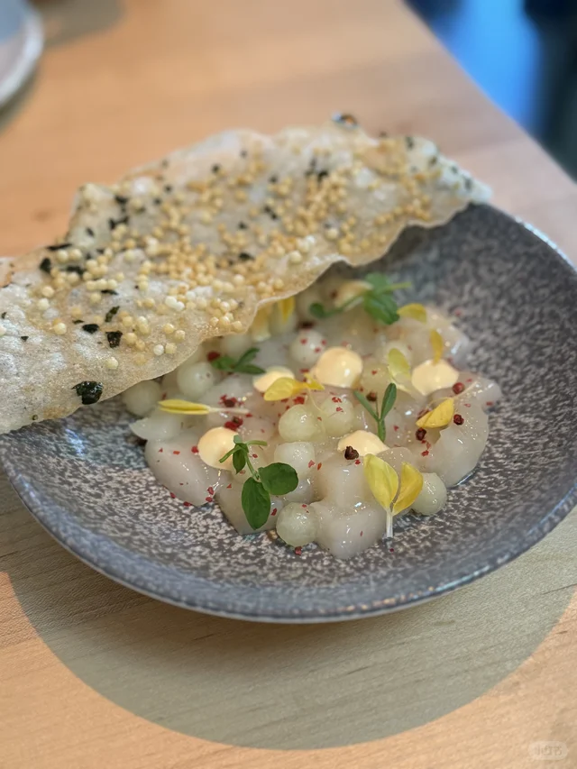
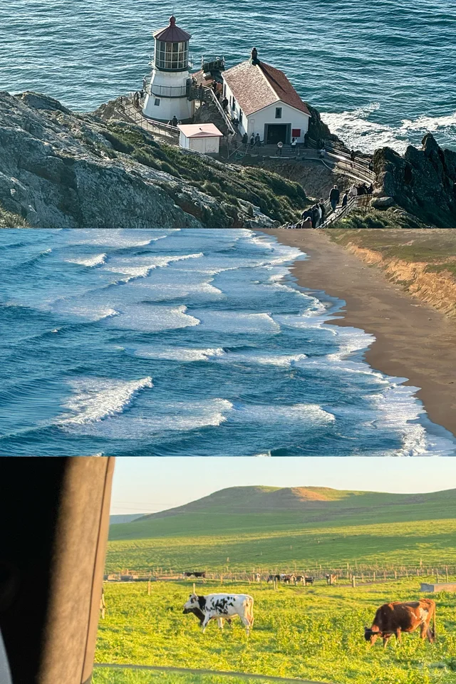
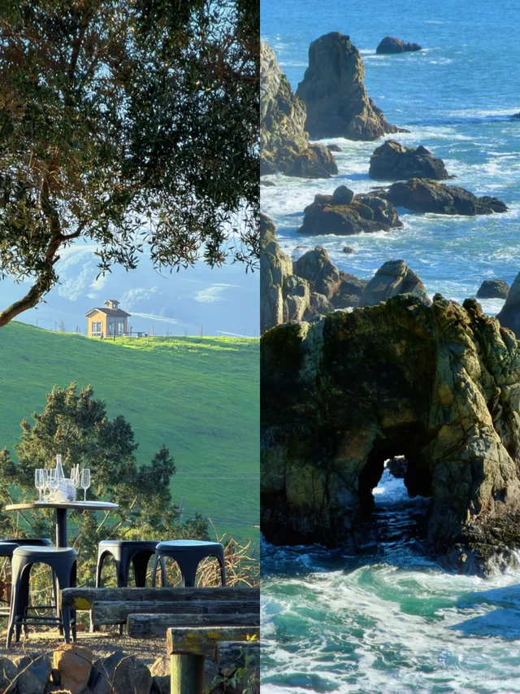
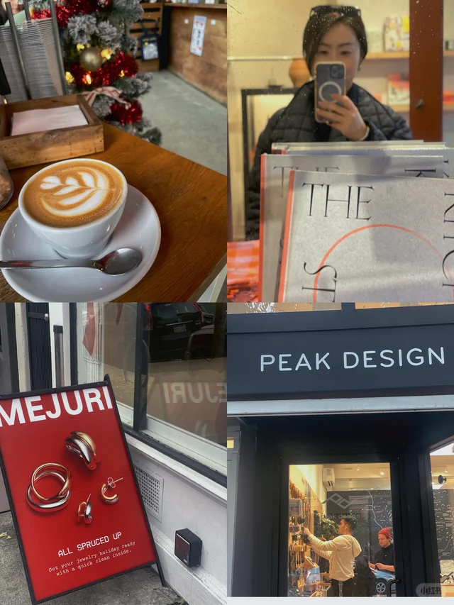

🎉活动与演出

「🍇本周长周末湾区精彩活动5/21-5/25」
正好覆盖本周长周末，时效性满分，懒人必看的活动汇总

「湾区5/22-5/25长周末活动| 嘉年华+夜市+市集+博物馆」
嘉年华、夜市、市集、博物馆一网打尽，多元文化体验适合全家出动

「5月的湾区太好逛了🔥码住这篇！」
5月限定活动密集，码住这份清单不踩空

「旧金山湾区5月活动 ✨杀糕节x马拉松x免费新展」
Cake Picnic、马拉松、免费新展，5月独家活动盘点
🎨艺术与文化

「盐田千春🎃也来湾区办展了！」
国际知名艺术家盐田千春装置展登陆湾区，红线作品现场超震撼

「湾区生活｜SF莫奈画展」
莫奈大展正在SF展出，印象派粉丝不容错过

「Beeple新展在湾区Palo Alto开幕🖥️」
数字艺术顶流Beeple来Palo Alto开新展，科技与艺术爱好者必打卡

「湾区｜SF Decorator Showcase 年度展又来了」
家居设计圈年度盛事回归，逛百年豪宅看顶级软装灵感

「湾区Renegade Art Fair真的很好逛别错过」
独立艺术家市集，淘小众手作和原创艺术的好去处
🍜美食探店

「湾区｜开车一小时也要去吃的贵州烧椒鸡！好吃」
开一小时车也值得，地道贵州风味烧椒鸡解辣瘾

「七访｜湾区最适合孕期解馋的米其林三星」
七次回访的米其林三星，可见品质和回头率都在线

「Palo Alto｜CEO们都喜欢的美日融合tapas」
Palo Alto科技圈CEO常去的美日融合小酒馆，约商务餐有面子

「旧金山 $98 tasting menu 无敌好吃 🤤」
$98的tasting menu性价比惊艳，预算友好的精致约会之选
🌲户外自然

「湾区桃花源记——Djerassi艺术徒步」
户外艺术装置+徒步路线，结合自然与艺术的小众体验

「旧金山 Land's End 陆地尽头」
陆地尽头的悬崖海景步道，看日落和大桥的绝佳机位

「SF周边一日游｜Point Reyes🦌」
Point Reyes一日游，海岸灯塔加偶遇麋鹿的治愈路线

「湾区周边❄️冷门Getaway 8个Day Trip打卡地」
8个冷门day trip地点，逃离人群的小众探索清单

「湾区周末Getaway之Mendocino」
Mendocino周末小逃离，海岸线和小镇都很出片
💎宝藏地点

「湾区茶室，适合找个雨后点一壶茶，读一本书」
雨后泡茶读书的氛围感茶室，I人精神补给站

「旧金山｜不太用力，但挺好看的店」
不刻意但很有品味的小店推荐，松弛感city walk首选

「SF Mission District |跟着当地人 city walk」
Mission区local视角city walk，壁画美食一路打卡

「旧金山：18th St / Florida St / Alabama St / 半日小型精品店闲逛路线」
半日精品小店闲逛路线，文具家居器物控的天堂

「Palo Alto这个小店可真好看呀」
Palo Alto颜值小店，路过顺手发现的惊喜空间